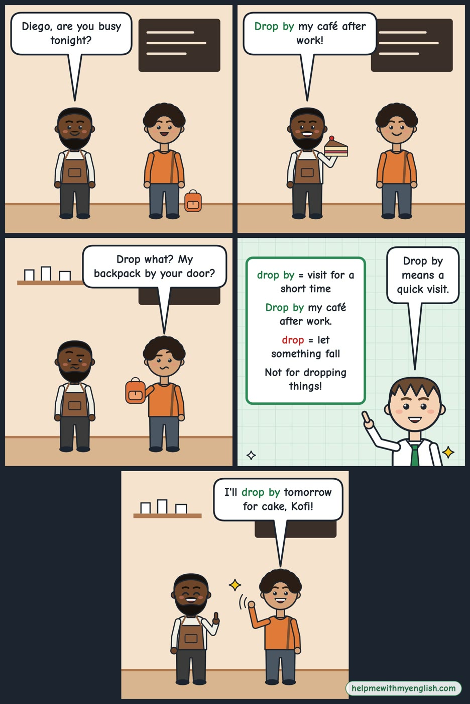

drop by
To visit someone for a short, informal time.
Drop by my café after work and try the new cake.
Tip: Use 'drop by' for a short, informal visit, often unplanned: 'drop by (someone's place)' or just 'drop by'. Don't use it for a long, formal or planned stay.
Hear it in conversation
OlenaI'm finally free this Saturday afternoon.
KofiNice! We're painting the hallway, but you should drop by anyway.
OlenaWon't I be in the way?
KofiNot at all. Come for a coffee and see the new colour.
OlenaOkay, I'll pop over around three, then.
Workbook
1. What does it mean?
In this conversation, what does 'drop by' mean?
2. Fill the gap
I was passing your office, so I thought I'd and say hello.
3. Choose the best reply
Amira: I'm in your neighbourhood tomorrow morning. Is that okay?
4. Your turn: speak
Tell me about a friend or neighbour you like to visit. How often do you see each other?
Show an example answer
My neighbour Lucia lives two streets away, and I often drop by after work for a quick chat. We usually have tea and talk for half an hour. It's nice because we don't need to plan anything.
Answer key: drop by
- 1. C. Visit someone briefly and informally
- 2. drop by
- 3. A. Sure, drop by whenever you like. I'll be home all morning.
- 4. Example: My neighbour Lucia lives two streets away, and I often drop by after work for a quick chat. We usually have tea and talk for half an hour. It's nice because we don't need to plan anything.
See it in a comic
